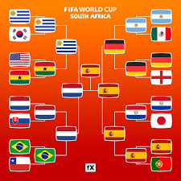

La Estrella de Sudáfrica 2010
La Copa del Mundo obtenida por la selección española de fútbol en Sudáfrica 2010 no solo supuso el primer título mundial en la historia de nuestro país, sino que consolidó la mentalidad de los futbolistas nacionales, demostrando que España podía reponerse a la adversidad y ganar en el máximo escenario del deporte rey bajo una descomunal presión internacional.
- El Camino Perfecto (tras el tropiezo): España firmó una trayectoria de superación épica; tras caer inesperadamente ante Suiza en el debut, encadenó seis victorias consecutivas llenas de oficio y madurez. Superó a Honduras y Chile en la fase de grupos, para luego avanzar con puño de hierro en las eliminatorias directas venciendo con idéntico y quirúrgico marcador (1-0) a Portugal, Paraguay y Alemania.
- Épica en el Soccer City: La gran final se disputó el 11 de julio de 2010 en Johannesburgo ante más de 84.000 espectadores. En una batalla física y de alta tensión contra los Países Bajos, Iker Casillas salvó al país al desviar con el pie un mano a mano milagroso a Arjen Robben. Ya en la prórroga, a falta de cuatro minutos para los penaltis, Andrés Iniesta desató la locura colectiva al cazar un balón en el área y fusilar a Stekelenburg para anotar el definitivo 1-0.
- El Bloque de la Excelencia: El equipo estaba magistralmente dirigido por Vicente del Bosque, quien mantuvo la calma institucional e integró piezas fundamentales que elevaron el sistema. Destacaban los guardianes de la zaga Carles Puyol y Gerard Piqué, los directores de orquesta Xavi Hernández y Xabi Alonso, el dinamismo de Sergio Busquets, y el instinto del infatigable ariete David Villa.
- Máxima Eficacia: La selección se caracterizó por su pulcritud táctica y una solidez defensiva que asfixió a los rivales a través del control absoluto del esférico. David Villa se erigió como el gran artillero nacional con 5 goles trascendentales en el certamen, mientras que la portería capitaneada por un soberbio Iker Casillas sumó un cerrojo perfecto, dejando su meta a cero en todos los partidos de la fase final.
- La Identidad: Este trofeo colocó la primera e histórica estrella sobre el escudo de España y transformó el estilo del Tiki-Taka en patrimonio del fútbol global. Convirtió el miedo a perder en una infinita paciencia ganadora, coronando el ciclo más dominante que ha conocido el balompié de selecciones al unirse de forma perfecta a las Eurocopas de 2008 y 2012.
